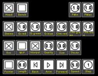
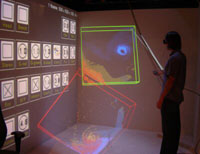
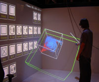
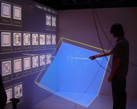
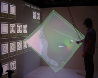
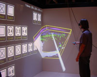
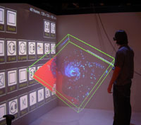

IEEE Visualization 2004 Contest Entry
User Friendly Volume Data Set Exploration in the Cave
Authors
-
Jürgen P. Schulze and
Andrew S. Forsberg
Department of Computer Science
Brown University, Providence, RI
Contest Entry Visualization System
We are presenting an interactive visualization system for the exploration of volume data like the contest's hurricane data sets in a CAVE-like immersive virtual environment. We use an immersive environment because we hypothesize that head-tracked stereo viewing gives better sense of 3D features. Data fusion is possible in a variety of ways: up to four independent variables can be shown in a single image, time dependent data can be shown as real-time animations, and multiple data sets can be displayed concurrently. We used this system with the hurricane data sets provided for the contest. All visualizations can be viewed and interacted with in real-time. The focus of our work is on the user interface and real-time interaction. We did not approach issues of large data sets like out-of-core rendering or parallelization.
We developed the software for Brown University's Cave. Our Cave is 8-foot cubed with projection screens on three walls and the floor. It is driven by four Dell PCs with synchronized Nvidia Quadro 3000g graphics boards for time-sequential stereo.
The virtual reality system we used for the contest has been developed in 2003 and 2004 by Jürgen Schulze and Andrew Forsberg at Brown University in Providence, RI. It is based on the volume rendering library Virvo, which Jürgen Schulze developed from 1999 to 2003 at the University of Stuttgart in Germany. More information about the Virvo can be found here.
Criterion 1: Interactivity
Our visualization system runs at interactive frame rates of about 10+ fps, except when a new data set is loaded from disk. Other interactions like navigation, changes of the transfer functions, resizing, region of interest mode, and clipping planes happen without a noticeable delay. The data sets are displayed using texture based direct volume rendering. Modifications of transfer functions and gamma values require graphics hardware support for fragment shaders. Our rendering cluster consists of four Dell PCs with dual 3.0 GHz Pentium CPUs and 1 GB RAM, as well as Nvidia Quadro 3000g graphics boards. The four walls of the Cave have 1024x768 pixels each and are rendered in stereo, wall is driven by one PC. We are using a color depth of 24 bit.
The frame rate our software runs at depends mainly on how much screen space the data sets take up, i.e., how many fragments are being rasterized—the rendering speed is limited by the pixel fill rate. The data set reconstruction quality can be specified by the user from within the Cave, which in turn determines the rendering speed.
Our system loads floating point data sets, but converts them to 8 bit integers before transferring them to the graphics card. We can store up to four data values in each voxel, so that each voxel occupies 32 bits of graphics memory. The mapping from floating point to integer values can be specified from within the Cave. Changes of this mapping require an update of the data set in graphics memory, which may take a few seconds.
Single time steps of the hurricane data can be loaded onto the graphics card completely (500 x 500 x 100 voxels). To play animations of all 48 time steps we down sampled the data sets to 128 x 128 x 100 voxels in a separate process off-line.
Criterion 2: Exploratory Support
Our system offers the following software tools for interactive exploration:
- Concurrent display of multiple data sets for comparisons: See screen shots below.
- Region of interest: See screen shots below.
- Clipping plane: See screen shots below.
- Markers: See screen shots below.
- Color and alpha transfer functions:
In data sets with only one scalar variable, the color mapping and the mapping from scalar values to opacity can be changed with two dials and a button on the icon wall (see screen shots). Changes are immediately visible because we are using a pixel shader. - Gamma values:
In multi-value data sets with up to three components the values are mapped to red, green, and blue, respectively. Gamma dials on the icon wall allow interactive changes of each color component's intensity. Again, this is a real-time change due to a pixel shader. - Fourth data channel:
If four variables are being rendered, the color of the fourth channel can be set with three dials on the icon wall. This is also a real-time operation thanks to a pixel shader. - Reconstruction mode:
Using a check box on the icon wall, the user can change between alpha blending and maximum intensity projection (MIP). MIP gives a fast overview about regions of different intensity in the data set, which might not immediately be apparent in alpha blending mode, while alpha blending gives a more realistic representation of a translucent object. - Pointer:
An optional laser pointer with a red tip can be used to discuss specific features of a data set. This is useful if more than one scientist explore data sets in the Cave and it is important to point out fine detail. - Data value zoom:
The mapping of floating point data values to integers, which is required by our graphics hardware, can be done from within the Cave. This allows the exploration of narrow regions of data values and acts as a zoom function in the data domain.
|  | The image shows a close-up view of the left wall of the Cave, our "icon wall". The user interacts with the icons by pointing at them with the virtual laser pointer and clicking a button. Check boxes change their state when they are clicked on, dials are changed by clicking and twisting the hand. A subtle but valuable design decision for collaborative sessions is that icons are drawn in the plane of the projection screen thereby allowing both head-tracked and non-headtracked viewers to clearly view the icons at all times. |
|  | Multiple data sets can be put side-by-side to help discover differences. Shown here two time steps are displayed to compare two characteristics. |
|  | Region of interest (ROI) mode: this mode limits the rendering region to a sub-volume, and a wire frame indicates the full volume. The ROI can be moved and resized by moving and rotating the wand. |
|  | Clipping plane mode: instead of visualizing the full 3D data set, only an opaque, user-specified plane through it is rendered. The plane can be freely rotated and positioned with the wand. |
|  | Markers: cone shaped markers can be put in the data set to help in discussions or to help find features again after changes of visualization parameters. The markers can be moved and oriented arbitrarily with the pointer. |
{kind=link}
{kind=link}
{kind=link}
{kind=link}
{kind=link}
Criterion 3: Multiple Characteristics
|  | Multiple variables in one data set: color encoded ice, rain, and snowBy storing different variables in different color channels, up to three variables can be displayed in a single image. Using the red, green, and blue gamma correction dials on the icon wall, the user can fade each variable in and out separately. The data set shown here consists of ICEf48, RAINf48, and SNOWf48. Its size is 256 x 256 x 100 voxels. This visualization technique works well as long as most voxels contain only one modality. If the values within different modalities overlap much, it is difficult to tell which ones occur at what intensity, unless the user has considerable experience with the basic components combined colors consist of.The combined data set has been created with a separate command line tool (VConv, from the Virvo software suite) which can merge several channels into one data file. |
|  | All time steps of a variable shown as an animationBy concatenating all 48 time steps of a variable the temporal development can be visualized. The Cave software provides VCR-like controls on the icon wall, with which the user can start and stop the animation, as well as single step forward and backward, set the playback speed, and directly select a particular time step. The data set shown is CLOUDf at a resolution of 128 x 128 x 100 voxels at each time step.To generate the animation using the available memory on the nVidia 3000G card, the data sets had been pre-processed to resample them to the smaller size, and to put them all together into a single file on disk. |
Multiple data sets side-by-sideBy rendering multiple data sets at once, the user can directly compare the differences of the data sets. In maximum intensity projection mode, the data sets can be correctly superimposed (does not currently work in alpha blending mode). As many data sets as fit into texture memory can be displayed at once. The image on the left shows time steps 1 and 48 of the CLOUDf data set, each has 500 x 500 x 100 voxels. Due to the large number of pixels drawn when multiple data sets are displayed, the frame rate drops. The frame rate can be increased if a lower quality reconstruction is selected. Additionally, we can run the system on a larger cluster of rendering nodes (e.g., 48-nodes) to boost the performance.Multiple data sets are selected by loading several data sets with the file browser. Each time a data set is selected, it will be added to the ones already loaded. Data sets can be closed by using an entry in their pop-up menu. |
{kind=link}
{kind=link}
Additional Comments
The Cave software runs either on the 4-node rendering cluster, or a 48-node cluster. Unfortunately, our 48-node cluster has outdated graphics cards that do not support pixel shaders so while it provides higher frame rates, the complete functionality of our system is not available yet. We hope to upgrade this system in the near future.